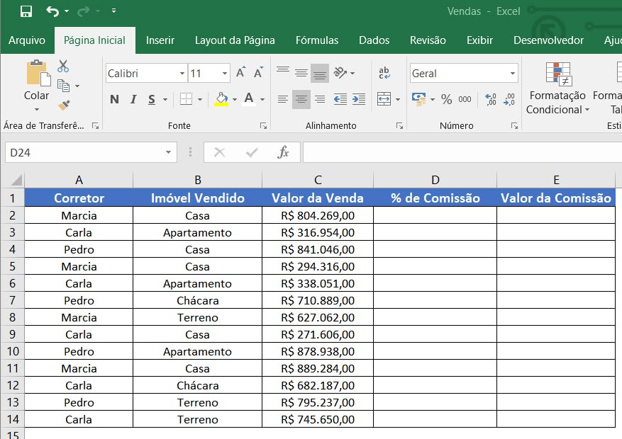

Organizar dados soltos em uma tabela faz toda a diferença. Com filtros, você encontra rapidamente o que precisa sem perder a estrutura da planilha.

É comum confundir os dois conceitos, mas eles não são a mesma coisa. Digitar informações organizadas em linhas e colunas é apenas o primeiro passo. Transformar esse conjunto de dados numa Tabela é o que libera um conjunto de recursos muito mais poderoso.
Para transformar um intervalo de dados numa tabela oficial, selecione as células e use o atalho Ctrl + T, ou acesse Inserir → Tabela.
Curiosidade: Antes do Excel 2007, esse recurso se chamava Lista. A partir dessa versão, a Microsoft transformou esse recurso em uma estrutura muito mais completa.
Ao transformar um intervalo em Tabela, o Excel entrega automaticamente:
Com os dados formatados como tabela, cada cabeçalho de coluna ganha uma pequena seta. Clicar nela abre um menu com todas as opções de filtro disponíveis para aquela coluna específica.
Dica: Dê um nome descritivo à sua tabela em Design da Tabela → Nome da Tabela.
A verdadeira força dos filtros aparece quando você vai além de simplesmente marcar valores específicos numa lista, e passa a usar condições.
O Excel oferece opções diferentes dependendo do tipo de dado da coluna, como:
Dica: Para acessar essas condições, clique na seta do cabeçalho e vá até Filtros de Número, Filtros de Texto ou Filtros de Data.